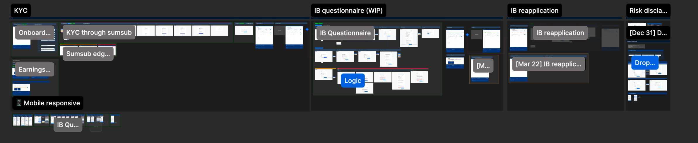

Pepperstone Partnership Program uses a revenue-sharing model designed for educators, signal providers, and trading communities to monetise their networks. Partners earn volume-based rebates and get dedicated support to grow their referral business.
New IBs have to complete a long, all-or-nothing process before they could start referring clients. This has caused significant drop-off and delayed activation to days.
“This process works, but it’s highly manual and back-and-forth between sales and partners — especially since even opening a trading account is a hassle for the client”
Let partners start referring clients right away with minimum information required
Automate KYC and account set up to reduce manual ops review dependency and reduce # of follow-ups
Convert lower friction into more signups, faster referrals, and more active partners
Maintain compliance and due diligence in partner review to ensure quality
[Add a short description of this solution]
[Add a short description of this solution]
[Add a short description of this solution]
I interviewed with sales, account managers, and operation team to understand the current onboarding flow for both new user and existing user. Understand the business need for each steps and remove unnecessary steps.
To make sure the new flow is as compliant as the old one, we map the new flow against the old flow, to understand all the scenario we need to cater for with different business type, COR, and user type
Benchmarking competitor platform to understand how partners currently onboard with other platforms

After each completed step the partner is shown exactly what to do next, rather than being left to guess or wait to be contacted.
Where a review genuinely takes time, the screen says how long, so partners aren’t left chasing status updates.
Longer sections are split into labelled sub-steps with visible progress, so partners know what’s left before they begin.
Every step works equally well on a phone, so partners can complete onboarding on whichever device they have to hand.